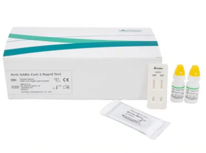
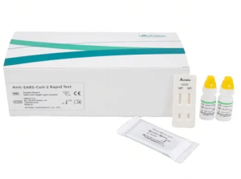

Anti SARS CoV-2 Rapid Test
Developer: Autobio
Test: Anti-SARS-CoV-2 Rapid Test
Technology: Lateral Flow
Target: Spike
Test: Anti-SARS-CoV-2 Rapid Test
Technology: Lateral Flow
Target: Spike
Anti-SARS-CoV-2 Rapid Test is a Rapid one step lateral flow
immunoassay intended for the qualitative detection and differentiation
of IgM and IgG antibodies to SARS-CoV-2 in human plasma from anti-coagulated
blood (Heparin/ EDTA/sodium citrate) or serum. The Anti-SARS-CoV-2 Rapid
Test is intended for use as an aid in identifying patients with an adaptive
immune response to SARS- CoV-2, indicating recent or prior infection.
The test can provide rapid detection of IgM and IgG antibodies to SARS-CoV-2 as
soon as 15 minutes with No special equipment needed.
| Antibody | Perfomance Measure | Estimate of Perfomance | 95% Confidence Interval |
|---|---|---|---|
| IgM | Sensitivity (PPA) | 95.7% (289/302) | (92.8%; 97.5%) |
| IgM | Sensitivity (NPA) | 99.7% (311/312) | (98.2%; 99.9%) |
| IgG | Sensitivity (PPA) | 99.0% (299/302) | (97.1%; 99.7%) |
| IgG | Sensitivity (NPA) | 99.4% (310/312) | (97.7%; 99.8%) |
| Combined | Sensitivity (PPA) | 99.0% (299/302) | (97.1%; 99.7%) |
| Combined | Sensitivity (NPA) | 99% (309/312) | (97.2%; 99.7%) |
| Combined | PPV at prevalence = 5% | 84.4% | (64.6%; 94.6%) |
| Combined | NPV at prevalence = 5% | 99.9% | (99.8%; 100%) |
Information taken from the
FDA EUA Authorized Serology Test Performance page.
 
